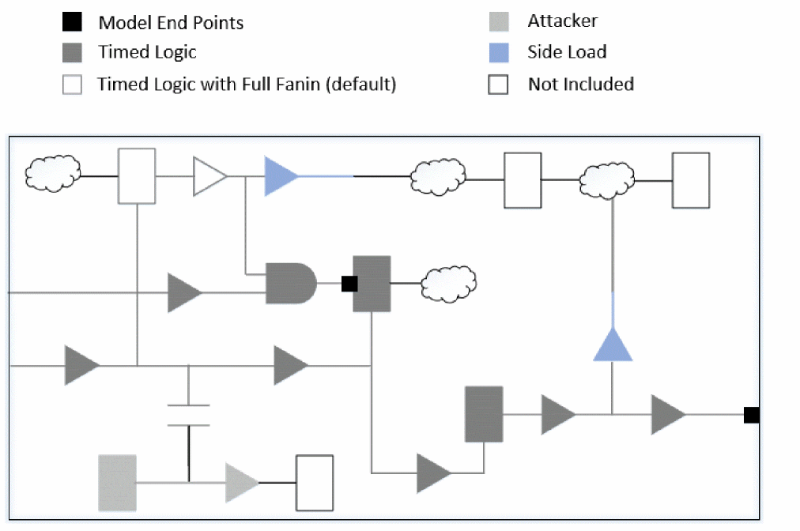

Hierarchical Flow with Boundary Model
The boundary model hierarchical flow is described below.
Creating Boundary Models
For creating a boundary model of a block, you can use the create_boundary_model command.
The block run script can be modified as follows:
read_verilog block.v
read_libs <>
set_top_module block
read_spef block.spef
read_sdc block.sdc
create_boundary_model -dir bm
create_boundary_model command runs the update_timing command by default. It is recommended not to invoke this command explicitly. If you manually include the update_timing command, this might result in redundant execution and increased runtime, especially for large designs.Boundary Model Usage
In the top-level timing run, the boundary model can be loaded (instead of the full block Verilog and SPEF) by using the read_boundary_model command before the set_top_module command is run. The boundary models can be loaded for multiple blocks.
The following example shows a sample top run script for flat timing analysis:
read_verilog ‘top.v block.v’
read_lib <>
set_top_module top
read_netlist 'top.v block.v' -top top
read_spef ‘top.spef block.spef’
read_sdc top.sdc
update_timing
This script can be modified for top analysis with boundary models, as shown below:
read_verilog top.v
read_lib <>
read_netlist top.v -top top
read_boundary_model -dir bm
set_top_module top
read_spef top.spef
read_sdc top.sdc
update_timing
It may be noted that none of the higher-level SPEF files should contain parasitics for the boundary model block, because this will lead to extra parasitics being present on the primary I/O nets of the block instances. Therefore, for performing timing analysis with boundary models you must use the hierarchical SPEF.
If both the boundary model and Verilog of a block are read at the top level, then the model netlist will override the block netlist. This run will have a higher run time and memory usage as compared to the run with only block boundary models - with the same accuracy. Hence, it is recommended to remove the block Verilog from the top run script.
Boundary Model Contents
A boundary model consists of the following:
-
Netlist for a model in a binary form:
-
Interface paths
The logic which constitutes the interface paths of a block are saved in the boundary model netlist. This includes the paths from the primary input ports to the sequential input pins, from the sequential output pins to the output ports, and from the input port(s) to the output ports. The interface paths are timed in the top level analysis. -
Extended fanin
The slew/arrival and the graph-based analysis (GBA) slack at an endpoint depends on its full fanin cone, therefore, the cone is also saved in the boundary model for an accurate top level timing analysis. The extended fanin logic is timed during the top level analysis. -
Internal attackers
Internal path nets, that are SI attackers to the interface paths nets, along with their slew and timing windows (TW) are preserved in the boundary model. All the leaf driver and receiver instances of such nets are also included. These attacker nets are not timed in the top level analysis but their SI impact, as per the stored slew and timing windows adjusted for clock latencies, is taken into account for better accuracy. -
Side load receivers
The receiver instances on the interface path nets that are not part of the interface logic are included.
-
Interface paths
The following figure shows an example of a netlist saved for a boundary model of a simple block.
Figure -16 Saved netlist for a boundary model

The netlist contains the following data:
- Parasitics for the nets in the model in the SPEF format.
- The SDC constraints for elements on block internal paths. These constraints are not used by the top-level timing but are used if a block scope is generated for the boundary modeled block in the top-level session.
-
Timing context data. Several types of timing data are saved to improve the accuracy of the model. Some of these are:
- Timing windows and slew data for non-interface attacker nets.
- Clock definitions. The definitions of all the clocks used in the block-level timing is stored in the model, in order to automatically map block-level clocks to the top-level clocks. This mapping is required for timing window application.
- Constant values on pins of sequential instances that are not part of a boundary path. These constants can affect timing results of sequential instances and are therefore maintained in the boundary model. The extra constants on non-extended fanin pins are also maintained in the boundary model.
Return to top